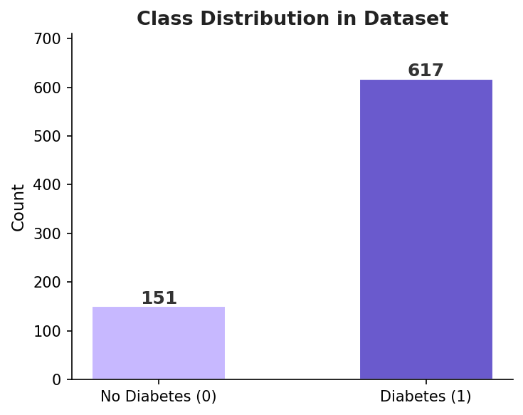
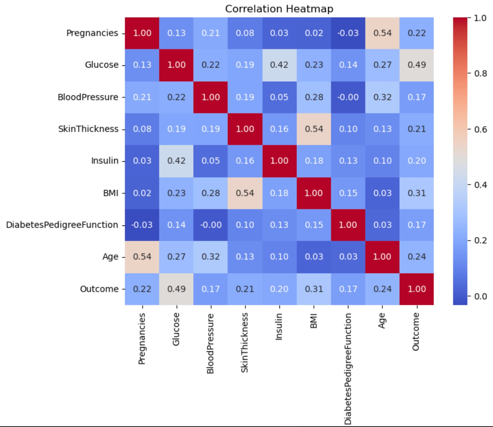
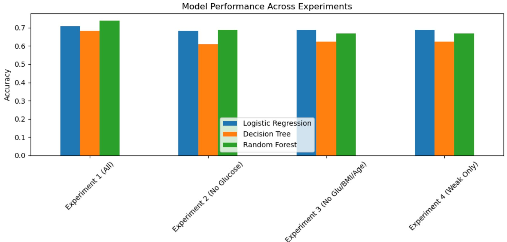
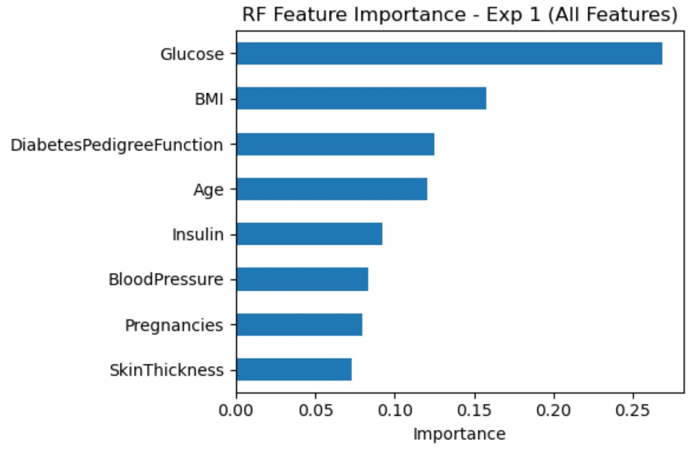
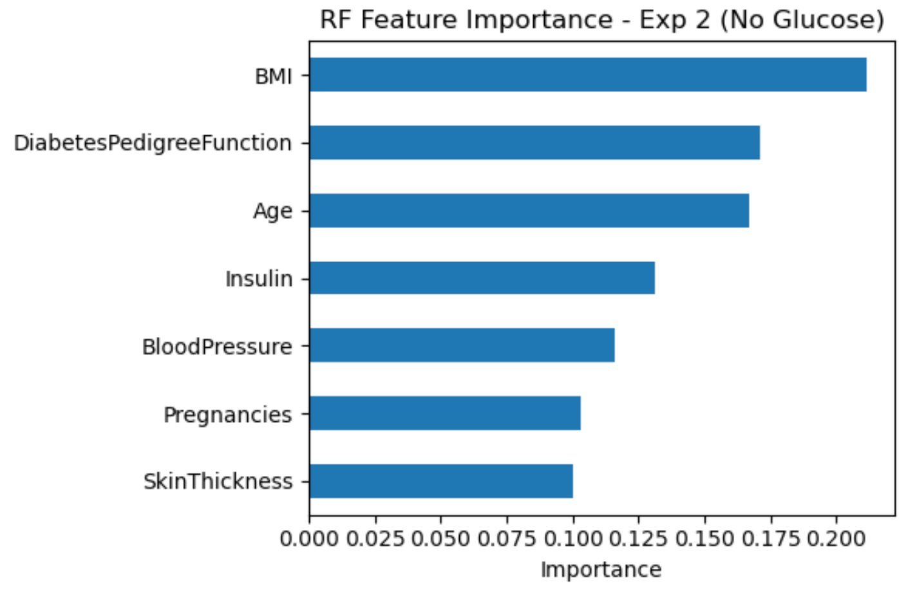
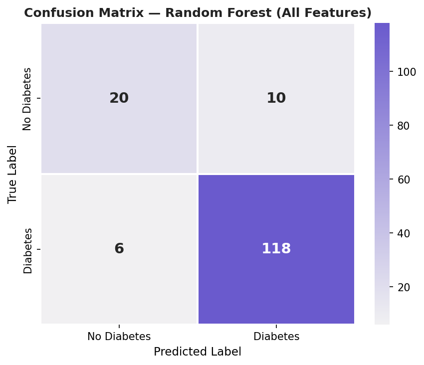

1. The Problem
"When the Most Important Data Disappears: Can We Still Predict Diabetes?"
Diabetes prediction models often rely heavily on glucose — the single strongest clinical indicator of the disease. But in the real world, healthcare data is often incomplete. Lab results get lost, patients skip tests, and electronic records have gaps. What happens to a prediction model when its most powerful feature is simply not available? Can the remaining signals still tell us something meaningful?
This project systematically investigates that question using machine learning on the well-known Pima Indians Diabetes Dataset.
2. The Dataset
The dataset contains 768 patient records from Pima Indian women, each with 8 clinical features and a binary diabetes diagnosis (Outcome: 0 = no diabetes, 1 = diabetes).
- Pregnancies — number of pregnancies
- Glucose — plasma glucose concentration
- Blood Pressure — diastolic blood pressure (mm Hg)
- Skin Thickness — triceps skinfold thickness (mm)
- Insulin — 2-hour serum insulin (μU/mL)
- BMI — body mass index
- Diabetes Pedigree Function — family history score
- Age — in years

Fig 1. Class distribution — roughly 65% non-diabetic, 35% diabetic.

Fig 2. Feature correlation heatmap. Glucose shows the strongest link to Outcome.
3. Data Preprocessing
Several columns contained zeros that are biologically impossible (e.g., a BMI of 0 or blood pressure of 0). These were treated as missing values and replaced with each column's median, computed only from valid (non-zero) rows.
- Columns cleaned: Glucose, Blood Pressure, Skin Thickness, Insulin, BMI
- Features scaled with
StandardScalerfor Logistic Regression (tree models use raw values) - 80/20 train/test split with stratification to preserve class balance
- Fixed random seed (42) for full reproducibility
4. Experiments
Three models were trained across four feature configurations, each designed to answer: how much does accuracy drop as we remove the most predictive features?
🧪 Experiment 1 — All Features
Baseline using all 8 clinical variables.
🧪 Experiment 2 — Remove Glucose
Drop the strongest predictor. How much does performance fall?
🧪 Experiment 3 — Remove Glucose + BMI + Age
Remove the top three correlated features.
🧪 Experiment 4 — Weak Features Only
Only the least correlated features remain.
5. Models Used
- Logistic Regression — linear baseline, interpretable coefficients
- Decision Tree — non-linear, prone to overfitting without pruning
- Random Forest — ensemble of 200 trees, most robust overall
6. Results

Fig 3. Accuracy of each model across the four experiments. Random Forest consistently outperforms.
7. Feature Importance
Random Forest provides built-in feature importance scores — a measure of how much each variable contributes to reducing prediction error across all decision trees.

Fig 4. With all features, Glucose dominates by a wide margin.

Fig 5. Without Glucose, BMI and Age rise to fill the gap.
This shift is meaningful: the model doesn't simply fail when Glucose is gone — it adapts, redistributing importance to the next best available signals.
8. Evaluation & Confusion Matrix
Accuracy alone can be misleading on imbalanced datasets. The confusion matrix below shows where the best-performing model (Random Forest, all features) makes mistakes.

Fig 6. The model catches most true positives but occasionally misses diabetic cases (false negatives).
In a medical context, false negatives (predicting "no diabetes" when the patient has it) carry higher risk than false positives. This is a critical consideration for any clinical AI tool.
9. Interpretation & Insights
The core finding: models can still function meaningfully without glucose. The degradation is real but gradual. Even the weakest feature set retains predictive power, suggesting that lifestyle and physiological factors carry latent information about diabetes risk that goes beyond a single lab result.
Random Forest consistently outperformed the other two models — likely because it captures non-linear interactions between features that logistic regression cannot model.
10. Limitations & Ethics
- Dataset is limited to Pima Indian women — results may not generalize to other demographics
- Median imputation for missing zeros introduces some statistical bias
- No hyperparameter tuning — Decision Tree may be overfitting
- Class imbalance (~65/35) was not explicitly corrected; could affect recall for the minority class
- These are predictive tools, not diagnostic instruments — clinical decisions require medical professionals
11. Conclusion
Even when the most important data disappears, meaningful patterns remain. This has real implications for healthcare AI: models shouldn't be abandoned just because a key variable is missing. With thoughtful feature engineering and robust model selection, imperfect data can still yield impactful insights — and better patient outcomes.
12. Resources & AI Transparency
Dataset: Pima Indians Diabetes Dataset via Kaggle / UCI ML Repository.
Libraries: Python, pandas, NumPy, scikit-learn, matplotlib, seaborn.
AI Transparency: Claude (Anthropic) was used to assist with code structuring, HTML formatting, and written explanations. All analytical decisions, interpretations, and experimental design were made by the author.